2 Spatial Weights
2.1 Introduction

Aims
The aims of this practical are to:
- Understand what spatial weights represent.
- Understand how spatial weights are constructed (i.e., contiguity, distance).
- Understand how spatial weights underpin analysis of spatial patterns.
Application
To achieve this, we’ll demonstrate construction of spatial weights using country Polygons and assess neighbourhood effects on cultural similarity, using the Cultural Fixation Index (CFST) from Muthukrishna et al. (2020).
Tools
Generate Spatial Weights Matrix (Spatial Statistics), Convert Spatial Weights Matrix to Table (Spatial Statistics), Introduction to Neighborhood Explorer, Calculate Geometry Attributes (Data Management Tools), Join Field (Data Management Tools), XY To Line (Data Management Tools), Delete Identical (Data Management Tools), Summary Statistics (Analysis Tools), Create Thiessen Polygons (Analysis Tools)
2.2 Practical
2.2.1 Conceptual approach
According to Tobler’s Law (Tobler, 1970):
“everything is related to everything else, but near things are more related than distant things.”
This idea has resonated strongly across geography, see Miller (2004). As spatial analysts, it also raises some fundamental questions:
What do we mean by near and distant? i.e., proximity
For a given set of spatial objects, which are neighbours? i.e., adjacency
How do we define and model proximity and adjacency?
Answering these spatial questions is a necessary step before embarking on further spatial analysis. Before we can ask …
What spatial patterns are present in a dataset?5
What spatial processes are important in my study area?6
… we need to define how the features of our spatial data (e.g., Points, Lines, Polygons, cells of a Raster) are topologically connected7 i.e., which are defined as neighbouring and which are non-neighbouring.
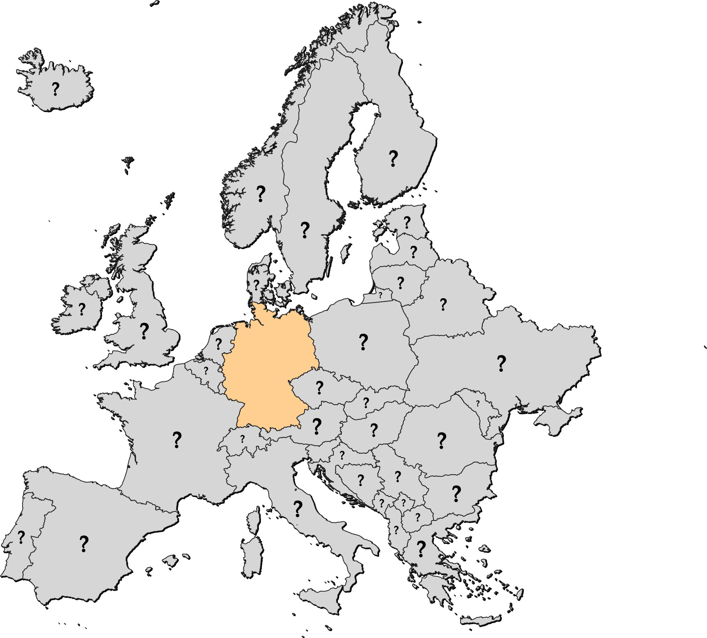
For the highlighted country, how would you define neighbours?
In the field of spatial econometrics8, which we’ll discuss more fully later in the unit, spatial relationships between objects are defined using spatial weights.
2.2.2 Defining spatial weights
Spatial weights (\(w\)) are used to represent the presence and/or strength of the spatial relationship between two objects. In the example above, we could define neighbours based on whether countries share a common border9, in which case:
- For neighbouring objects, \(w=1\).
- For non-neigbouring objects, \(w=0\).
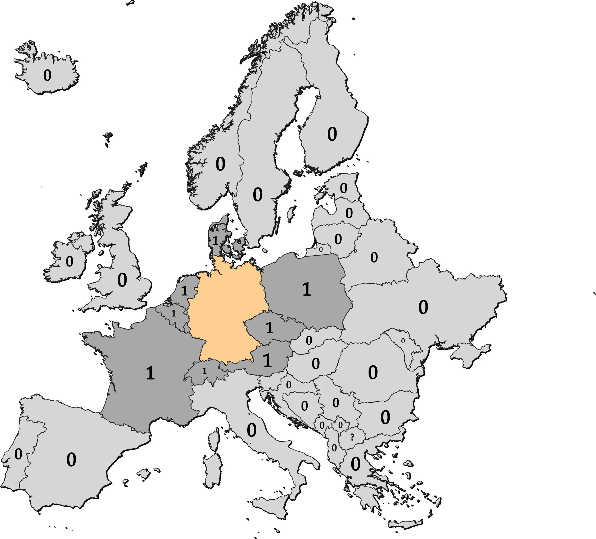
We would typically calculate the spatial weight (\(w\)) for every pair of objects in a dataset (\(ij\)), and store this in a spatial weights matrix (\(\mathbf{W}\)), which conceptually looks like this:
\[\mathbf{W}=\begin{bmatrix} w_{11} & w_{12} & ... & w_{1n} \\ w_{21} & w_{22} & ... & w_{2n} \\ \vdots & \vdots & \ddots & \vdots \\ w_{n1} & w_{n2} & ... & w_{nn} \end{bmatrix}\]
\(\mathbf{W}\) contains the spatial weights for every pair of objects (\(w_{ij}\)). In this example, the top row contains the spatial weight associated with Object 1 and itself (\(w_{11}\)10), the spatial weight for Object 1 and Object 2 (\(w_{12}\)), up to the number of objects (\(n\)) in the dataset (\(w_{1n}\)). The second row contains all the spatial weights associated with Object 2 and every other object in the dataset (\(w_{2n}\)), and so on.
Let’s illustrate with a simple example, focusing on six European countries: Netherlands (\(n\)), Belgium (\(b\)), Luxembourg (\(l\)), Germany (\(g\)), Austria (\(a\)), and Czechia (\(c\)):
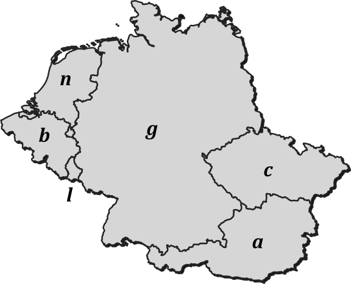
If we apply our current neighbourhood rule (if countries share a border, \(w=1\), else \(w=0\)), then:
- \(w_{nb}=1\) for the Netherlands (\(n\)) and Belgium (\(n\)), as these are directly bordering.
- \(w_{na}=0\) for the Netherlands (\(n\)) and Austria (\(a\)), as these are not directly bordering.
We would calculate \(w\) for all pairs, and store these values with the following structure:
\[\mathbf{W}=\begin{bmatrix} w_{nn} & w_{nb} & w_{nl} & w_{ng} & w_{na} & w_{nc} \\ w_{bn} & w_{bb} & w_{bl} & w_{bg} & w_{ba} & w_{bc} \\ w_{ln} & w_{lb} & w_{ll} & w_{lg} & w_{la} & w_{lc} \\ w_{gn} & w_{gb} & w_{gl} & w_{gg} & w_{ga} & w_{gc} \\ w_{an} & w_{ab} & w_{al} & w_{ag} & w_{aa} & w_{ac} \\ w_{cn} & w_{cb} & w_{cl} & w_{cg} & w_{ca} & w_{cc}\end{bmatrix}\]
Using our previous neighbourhood rule, the spatial weights matrix would be as follows:
\[\mathbf{W}=\begin{bmatrix} 0 & 1 & 0 & 1 & 0 & 0 \\ 1 & 0 & 1 & 1 & 0 & 0 \\ 0 & 1 & 0 & 1 & 0 & 0 \\ 1 & 1 & 1 & 0 & 1 & 1 \\ 0 & 0 & 0 & 1 & 0 & 1 \\ 0 & 0 & 0 & 1 & 1 & 0\end{bmatrix}\]
Which country has the highest number of neighbours? What do you notice about the spatial pattern of the values?
Graphically, \(\mathbf{W}\) would resemble the following, where lines are connecting each neighbouring country (\(w=1\)), and are absent for non-neighbouring countries (\(w=0\)):
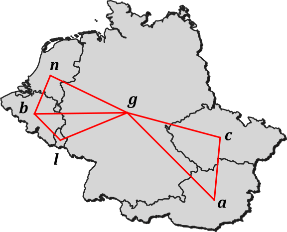
The examples above are just one approach to calculating spatial weights \(w\) and we’ll explore a range of methods as we progress through the practical. Irrespective of choice of method, the spatial weights matrix \(\mathbf{W}\) is a way of defining the connectivity (topology) between all pairs of observations.
2.2.3 Spatial weights in practice
So far we’ve defined spatial weights (\(w\) = the presence and/or strength of the spatial relationship between two objects) and explored how we can store \(w\) for all pairs of observations in a spatial weights matrix \(\mathbf{W}\).
The best way to really understand \(w\) and \(\mathbf{W}\) is through data exploration, so let’s get started:
Open ArcGIS Pro and create a new project with a suitable name (e.g.,
practical-2), making sure to select the corresponding directory on your P Drive (P:\GEOG73001\practical-2) and unchecking ‘Create a folder for this local project’.
Create a connection to
GEOG73001/dataand then load the Ordnance Survey (OS) 100 km grid (osbng_grid_100km.shp).
This layer is the National Grid for Great Britain, comprising grid squares each of size 100 km by 100 km:
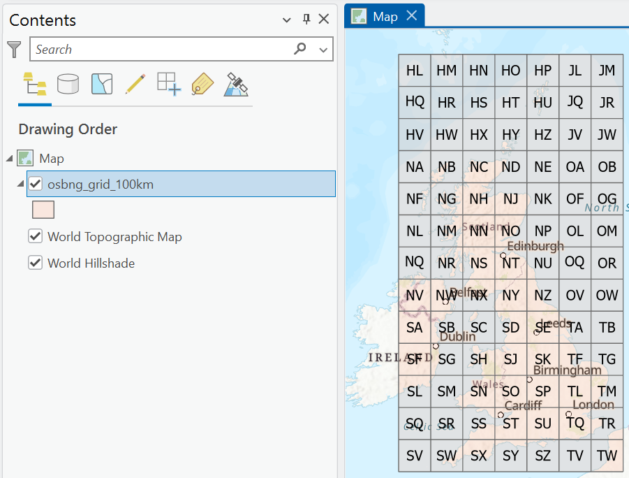
The Coordinate Reference System (CRS) for this dataset is EPSG:27700, which is designed to minimise distortion in the area of interest (i.e., Great Britain)11.
Can you remember how to check the CRS for a map layer?
When loading data, ArcGIS will automatically update the map’s coordinate reference system to match that of the first feature layer added.
In the Contents Pane, right click Map → Properties → Coordinate Systems, to verify.
The National Grid is unlike most spatial data (i.e., all features are of the same size, regularly spaced). This simplicity is useful, as it will allow us to investigate and understand the different approaches we can use for calculating \(w\).
2.2.4 Contiguity weights
The first main approach for calculating \(w\) is referred to as contiguity weights i.e., neighbouring (contiguous) spatial objects are those that share a common border. However, the definition of “common border” is more complex than you might think. We can explore this complexity using the Neighborhood Explorer.
In the top ribbon, navigate to Analysis → Neighbourhood Explorer, ensuring that
osbng_grid_100kmis selected in the Contents Pane. For “Unique ID Field”, useFID.
The Neighbourhood Explorer is a powerful tool that allows us to visualise and investigate different conceptualisations of spatial relationships.
Rook Contiguity
For “Conceptualisations of Spatial Relationships”, choose “Contiguity Edges Only” and then press Apply.
When complete, your map cursor will have changed, and a new layer will now be visible in the Contents Pane.
Select one of the OS grid squares, which should visualise the connections between the focal feature (the one you’ve selected) and all the neighbouring features (based on the “contiguity edges only” rule).
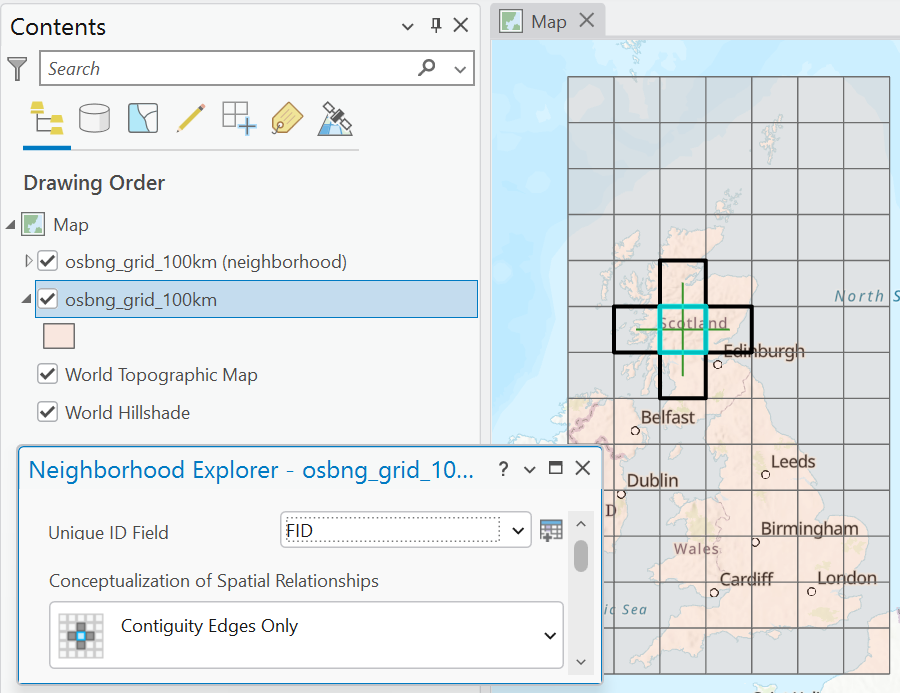
As the name suggests, Contiguity Edges Only identifies neighbouring objects which share an edge. This is also known as Rook contiguity, reflecting one of the possible moves in the game of chess.
For example, take the simple \(3 \times 3\) grid below, labelled \(a-i\):
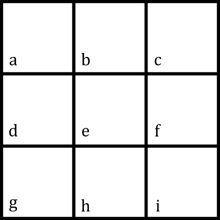
Using Contiguity Edges Only (Rook), our neighbours would resemble the following i.e., \(a\) shares edges with \(b\) and \(d\) (so are neighbouring), but does not share an edge with \(e\) (non-neighbouring):
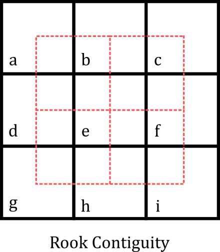
Conceptually, \(\mathbf{W}\) would resemble the following, storing \(w\) for all pairs of observations.
\[\mathbf{W}=\begin{bmatrix} w_{aa} & w_{ab} & w_{ac} & w_{ad} & w_{ae} & w_{af} & w_{ag} & w_{ah} & w_{ai} \\ w_{ba} & w_{bb} & w_{bc} & w_{bd} & w_{be} & w_{bf} & w_{bg} & w_{bh} & w_{bi} \\ \vdots & \vdots & \vdots & \vdots & \vdots & \vdots & \vdots & \vdots & \vdots \\ w_{ia} & w_{ib} & w_{ic} & w_{id} & w_{ie} & w_{if} & w_{ig} & w_{ih} & w_{ii}\end{bmatrix}\]
For the example rows above, the values for \(w\) would be as follows:
\[\mathbf{W}=\begin{bmatrix} 0 & 1 & 0 & 1 & 0 & 0 & 0 & 0 & 0 \\ 1 & 0 & 1 & 0 & 1 & 0 & 0 & 0 & 0 \\ \vdots & \vdots & \vdots & \vdots & \vdots & \vdots & \vdots & \vdots & \vdots \\0 & 0 & 0 & 0 & 0 & 1 & 0 & 1 & 0 \end{bmatrix}\]
Queen’s Contiguity
An alternative and more commonly used approach to calculating contiguity weights is referred to by ESRI as Contiguity Edges Corners or more widely as Queen’s contiguity, which identifies neighbouring objects which share an edge or a point.
In Neighbourhood Explorer, update the “Conceptualisations of Spatial Relationships” to “Contiguity Edges Corners”, press Apply, and explore the connections in the Map View.
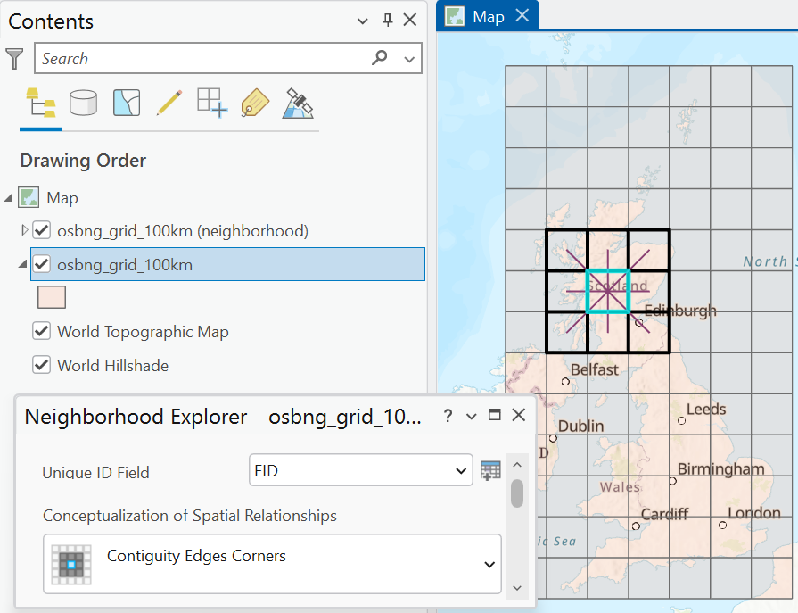
Returning to our simple \(3 \times 3\) grid, but this time using Contiguity Edges Corners (Queen’s), our neighbours would resemble the following i.e., \(a\) shares edges and points with \(b\) and \(d\), so are defined as neighbouring. While \(a\) does not share an edge with \(e\), it does share a point, so is also neighbouring:
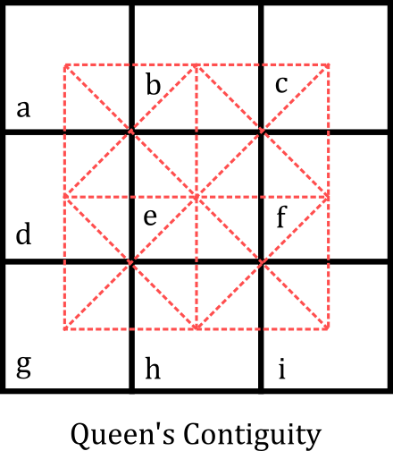
The conceptual structure of \(\mathbf{W}\) would remain the same as above, storing \(w\) for all pairs of observations, but the values of \(w\) will change with our new neighbourhood rule:
\[\mathbf{W}=\begin{bmatrix} 0 & 1 & 0 & 1 & 1 & 0 & 0 & 0 & 0 \\ 1 & 0 & 1 & 1 & 1 & 1 & 0 & 0 & 0 \\ \vdots & \vdots & \vdots & \vdots & \vdots & \vdots & \vdots & \vdots & \vdots \\0 & 0 & 0 & 0 & 1 & 1 & 0 & 1 & 0 \end{bmatrix}\] Both of these approaches are examples of binary classifications of spatial relationships, objects are either neighbouring (\(w=1\)) or not (\(w=0\)). Objects cannot be partly neighbouring12.
2.2.5 Distance based weights
Another approach to define \(w\) is based upon distance between objects (i.e., proximity), with “near” objects defined as neighbours.
Fixed Distance
Return to the Neighbourhood Explorer, and update the “Conceptualisations of Spatial Relationships” to “Fixed Distance”, keeping the “Distance Method” as ‘Euclidean’. Explore the effects of the “Distance Band” attribute on the neighbourhood classification.
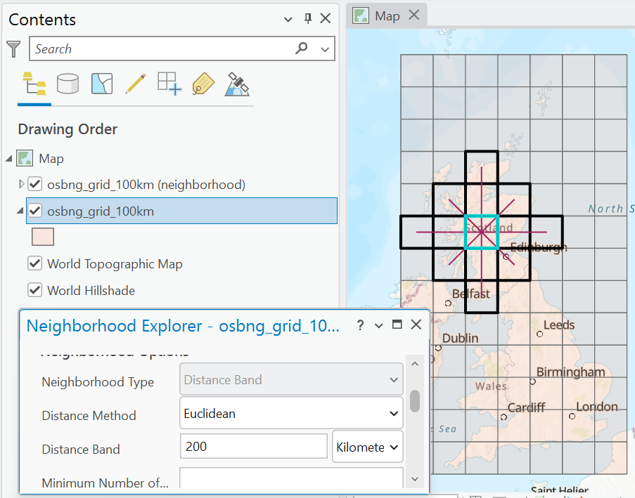
When using a “Distance Band” of 50 km, no neighbours are returned for any of the selected cells. Why might this be? Where are distances measured from?
The “Fixed Distance” approach is also binary and we can confirm this by returning to the Neighbourhood Explorer, where the table at the bottom lists the IDs of all the neighbours for the selected focal feature and the corresponding weight \(w\). The ‘Statistics’ tab also includes important information about the number of features in the layer and neighbour counts.
K Nearest Neighbours
Another distance based approach returns the “\(K\) Nearest Neighbours” for each feature, with the value of \(K\) selected by the user.
Use the Neighbourhood Explorer to explore the effects of changing \(K\).
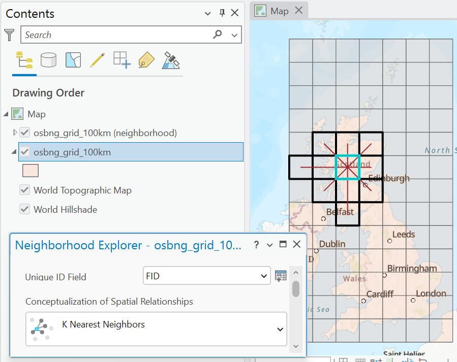
Inspect the example above, where \(K=10\). What do you notice about the pattern of neighbours?
In the example above, the eight nearest neighbours are fairly easy to identify (immediately \(N, NE, E, ...\)), but when identifying the remaining two neighbours (to achieve \(K=10\)), there are four grid cells that are equidistant to the focal feature (two grid cells \(N,E,S\) and \(W\), respectively).
What method do you think ArcGIS has used to select the cells to the south and west? Try to replicate the above result yourself, and test a few locations…
This might be an issue for our simple regularly-spaced dataset, but is unlikely to be a significant problem for more typical spatial datasets, where multiple equidistant features are unlikely.
Inverse Distance
The final distance based approach to consider is Inverse Distance, which marks a shift away from a binary classification of \(w\) to a continuous classification. Rather than \(w = 0|1\), \(w\) can be continuous, where “nearer” objects have larger weights than “distant” objects, in accordance with Tobler’s Law (Tobler, 1970).
Return to the Neighbourhood Explorer, and update the “Conceptualisations of Spatial Relationships” to “Inverse Distance” and choose a suitable Distance Band (e.g. 200 km) and apply.
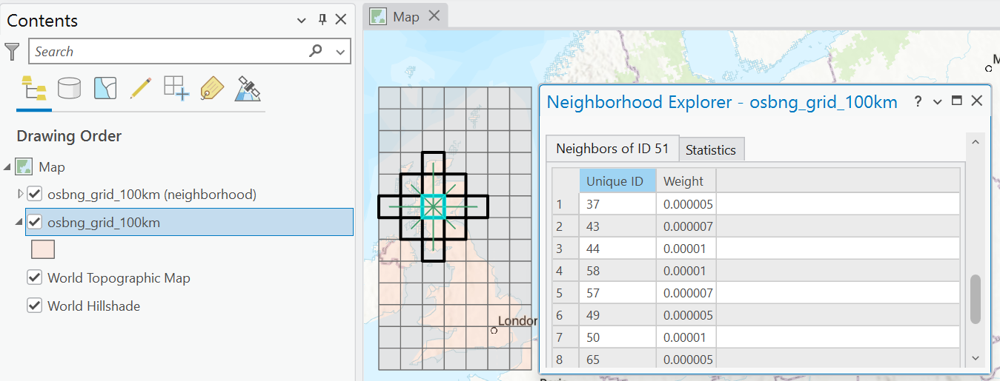
Here we can see that \(w\) is now continuous, with the largest weights for the nearest grid cells (0.00001, immediately \(N, E, S\) and \(W\)) and the smallest weights for the furthest objects (0.000005).
The magnitude of this distance decay effect (i.e., Tobler’s Law) is controlled by the weighting scheme used and any associated model parameters. Our weighting scheme here is inverse distance weighting, defined as follows:
\[w=1/d^p\] where \(d\) is the distance between objects, and \(p\) is an exponent controlling how \(w\) varies with distance. Our current approach uses \(p=1\). In the calculations above, our distance \(d\) uses the units of the Coordinate Reference System (m), so for cells that are 100 km apart, the calculation would be as follows: \(1 / 100000^1 = 0.00001\).
Explore how changing the “Exponent” parameter (\(p\)) influences \(w\).
As \(p\) increases, closer objects receive proportionally larger weights, relative to distant objects. For example, when \(p=1\) and using a distance threshold of 200 km, the closest cells have a weight twice as large as distant objects, here defined as those within 200 km i.e., \(w=0.00001\) compared to \(w=0.000005\) for distant cells (\(2 \times w\)). When \(p=2\), the difference is four times as large (\(w=1 \times 10^{10}\) compared to \(w=2.5 \times 10^{11}\)).
The “Inverse Distance” conceptualisation is just one weighting scheme, but there are others we can use to control the distance decay effect. These can be accessed by selecting the “Manual” conceptualisation at the bottom of the Neighbourhood Explorer, using “Distance Band” for Neighbourhood Type, and then selecting the Weighting Method.
Explorer the effects of these alternative methods on \(w\).
2.2.5.1 Row Standardisation
One option you may have noticed in the Neighbourhood Explorer is Row Standardisation. This is a useful approach to account for uneven spatial data and/or edge effects (i.e., objects near the edge of your dataset are likely to have fewer neighbours than those near the centre), both of which can result in significant differences in the number of neighbours.
Row standardisation converts each value of \(w\) in the spatial weights matrix \(\mathbf{W}\) into proportional standardised weights \(w_{ij(s)}\), dividing each weight \(w_{ij}\) by the sum of all its neighbour weights (the row \(j\)):
\[w_{ij(s)}=w_{ij}/\sum_{j}w_{ij}\]
For example, take \(\mathbf{W}\) for our European example, where I’ve added the row sums for each feature (i.e., the number of neighbours):
\[\mathbf{W}=\begin{bmatrix} 0 & 1 & 0 & 1 & 0 & 0 \\ 1 & 0 & 1 & 1 & 0 & 0 \\ 0 & 1 & 0 & 1 & 0 & 0 \\ 1 & 1 & 1 & 0 & 1 & 1 \\ 0 & 0 & 0 & 1 & 0 & 1 \\ 0 & 0 & 0 & 1 & 1 & 0\end{bmatrix} =\begin{matrix} 2 \\ 3 \\ 2 \\ 5 \\ 2 \\ 2 \end{matrix}\]
A row standardised \(\mathbf{W}\) would resemble the following:
\[\mathbf{W}=\begin{bmatrix} 0 & 1/2 & 0 & 1/2 & 0 & 0 \\ 1/3 & 0 & 1/3 & 1/3 & 0 & 0 \\ 0 & 1/2 & 0 & 1/2 & 0 & 0 \\ 1/5 & 1/5 & 1/5 & 0 & 1/5 & 1/5 \\ 0 & 0 & 0 & 1/2 & 0 & 1/2 \\ 0 & 0 & 0 & 1/2 & 1/2 & 0\end{bmatrix}\] Each row now sums to 1, hence row standardisation.
2.2.6 Spatial weights for “real” data
So far we’ve explored key concepts related to spatial weights and common approaches to define \(w\) using a very simple spatial dataset. You should now have an understanding of contiguity and distance based weights, and the important choices involved (e.g., selecting \(K\), exponents, distance bands, row standardisation).
However, our OS dataset is unlike most spatial data, so to develop our understanding further, let’s investigate spatial weights with a more typical spatial dataset.
Load the Natural Earth data from Practical 1 [
ne_10m_admin_0_countries.shp].
If you change the map scale, your Map View should resemble the following:
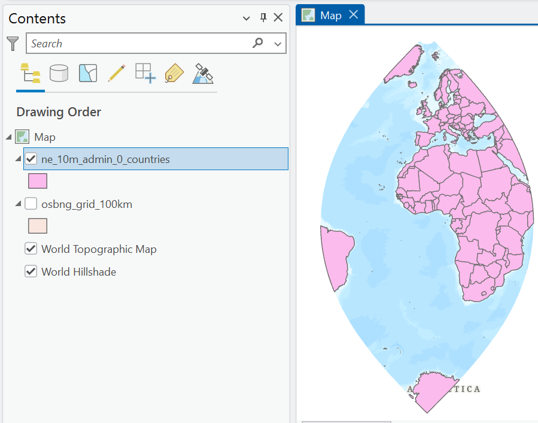
This is very different to the Map View from Practical 1. Can you think why this might be?
Answer
This is because our Map View is using EPSG:27700 as the coordinate reference system (CRS). This does a good job of minimising distortion for Great Britain, but at the cost of enhancing distortion elsewhere. As a result, we should really change our Map CRS to that of the Natural Earth data (EPSG:4326), or a similar CRS designed for global data.Right click on “Map” in the Contents Pane → Properties → Coordinate Systems, and choose a suitable
Projected Coordinate Systemfor the World e.g., Equal Earth, Natural Earth, Robinson, or useGeographic Coordinate System→ World → WGS 1984.
Our new Map CRS will make it much easier to see our spatial relationships:
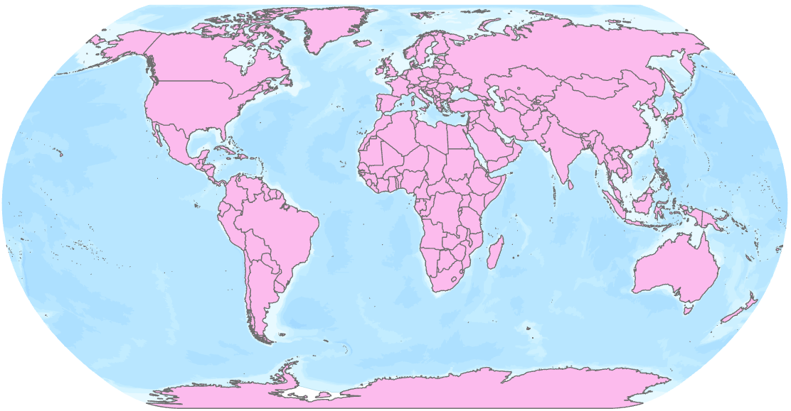
If we change our Map View back to Great Britain, we can see the local distortion quite clearly:
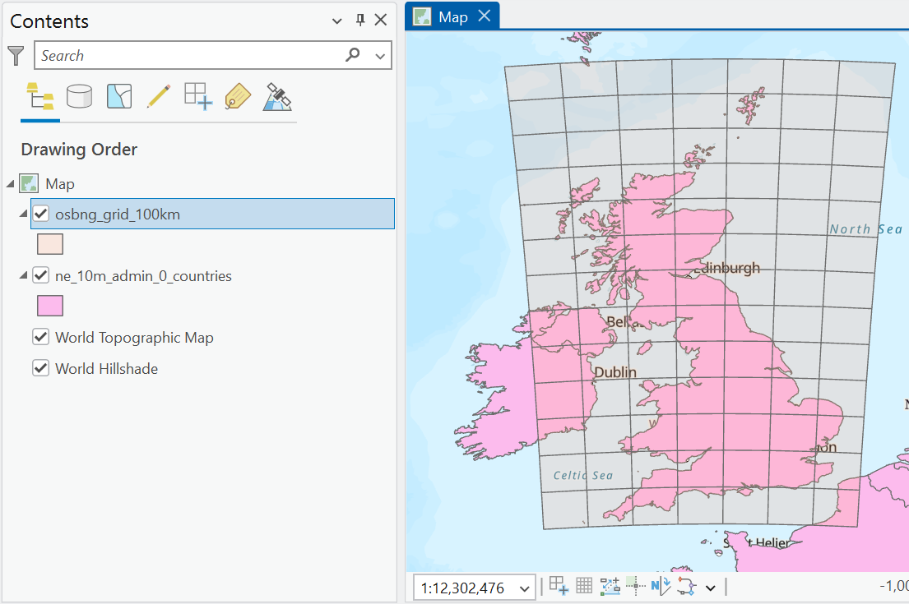
Use the Neighbourhood Explorer to investigate different conceptualisations of spatial relationships, using “Unique ID” =
NE_ID13. This is a stable and unique ID provided in the Natural Earth dataset.
What do you think is the most appropriate method for this dataset? e.g., Contiguity or Distance based, Binary or Continuous?
Is there a “correct” neighbourhood for each country?
Do you notice any interesting or unexpected behaviour? Hint: France is a useful country to explore…
2.2.6.1 Generating the spatial weights matrix
The Neighbourhood Explorer is a really useful tool which allows us to dynamically view connections for a single feature of interest by selecting the focal feature. To generate these connections for the entire dataset, and potentially use the result for further analysis, we need to create our spatial weights matrix \(\mathbf{W}\).
Open the Geoprocessing tool Generate Spatial Weights Matrix. The inputs and underlying concepts should be very familiar to you by now, so select the
Natural-Earthdata as input using “Unique ID” =NE_ID. For the output spatial weights matrix, choose a suitable file name (e.g.,natural-earth-swm.swm) and save to thepractical-2directory. You are welcome to choose the Neighbourhood Type, although Queen’s contiguity might be a suitable choice here. Leave all other settings as the default (e.g., ‘Row Standaridation’ = checked).
If successful, natural-earth-swm.swm should now be visible in the practical-2 directory.
There are some warnings to check:
WARNING 001605: Distances for Geographic Coordinates (degrees, minutes, seconds) are analyzed using Chordal Distances in meters.
WARNING 000846: 83 feature(s) had no neighbors which generally invalidates the statistical properties of a test.WARNING 001605 is an important one to note, as it raises questions about the accuracy of any distance measurements. However, here we are using contiguity weights, which are based on a topological relationship between objects (i.e., do they share an edge or a point?), rather than a geometric relationship (i.e., are objects within a certain distance of each other?). When using distance based weights, we should be cautious about the CRS of our data and the distance measurement approach used.
WARNING 000846 also provides useful information, where 83 features have no contiguous neighbours e.g., islands. If we were running further statistical analysis using \(\mathbf{W}\), we could exclude these features from our dataset, or use a less conservative approach e.g., \(K\) nearest neighbours.
To check our output:
Re-open the Neighbourhood Explorer, but this time choose
Get Spatial Weights from Fileand usenatural-earth-swm.swmas the input. When applied, the defined neighbours should match those identified previously. Note our.swmfile is static, so to switch conceptualisation, Generate Spatial Weights Matrix would have to be run again.
2.2.6.2 Visualising the spatial weights matrix
We now have a static .swm file that we could use for further analysis14. However, we can’t easily inspect this output in its current format. Before we use our .swm file, it might be useful to investigate the weights and visualise all of the neighbourhood connections in \(\mathbf{W}\). This can be achieved by (1) converting our spatial weights matrix to a table, (2) adding geometry attributes, and (3) converting our table to a feature layer for visualisation.
First, open the Geoprocessing tool Convert Spatial Weights Matrix to Table, using
natural-earth-swm.swmas the input. For the output location, I would like you to selectpractical-2.gdb, which can be found within thepractical-2directory. Use a suitable output name e.g.,natural_earth_swm_table.
Rather than saving to a directory, we have saved our output to a File Geodatabase (practical-2.gdb). This was created automatically when we initialised our Project at the start of the practical. This is an ESRI data storage format which is described more fully here. While there are some advantages to using geodatabases, our main reason for doing so here is that tables stored within a .gdb are easily editable via ArcGIS, which is not always the case for standalone tables (e.g., separate .csv or .xls files).
The output should now be listed in the Contents Pane and when opened should resemble the following:
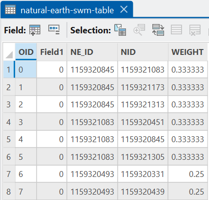
The key fields are as follows:
-
NE_ID: the unique ID of the focal feature for that row e.g., Indonesia = 1159320845 -
NID: the unique ID of a neighbouring feature e.g., Malaysia = 1159321083 -
WEIGHT: \(w\) for thatNE_ID-NIDpair using the selected conceptualisation (i.e., Contiguity).
We have used a binary classification for calculating \(w\). Why are our weights continuous?
Answer
This is because we used row standardisation, see here for a refresher.The format of this table differs from the dense spatial weights matrix \(\mathbf{W}\) introduced above, where all pairs of observations are present, irrespective of whether they are neighbouring or not. The output here is a sparse representation of the same data, where non-neighbouring pairs have been removed, and each row represents a neighbouring pair.
Our output file natural-earth-swm-table contains useful information, but is not associated with any geographic information (i.e., feature geometries) that we could use to visualise the topological connections. To address this:
Open the Geoprocessing tool Calculate Geometry Attributes, using
ne_10m_admin_0_countriesas input. For the ‘Geometry Attributes’, we want to calculate two properties:Centroid x-coordinateandCentroid y-coordinate, providing a new field name for each (e.g.,centroid_x,centroid_y).
If successful, ne_10m_admin_0_countries will be modified in place, with new fields (centroid_x, centroid_y) in the Attribute Table. These fields are in the units of the CRS (i.e., decimal degrees). Our next step is to join this data to our spatial weights matrix.
Open the Geoprocessing tool Join Field. In Practical 1 we used a dynamic table join via Joins and Relatives → Add Join, linking feature layers via a common attribute. One key difference here is that our table join is static i.e., the joined fields are permanently joined to the input table.
Use
natural-earth-swm-tableas the Input Table, with the Input Field asNE_ID, and usene_10m_admin_0_countriesas the Join Table (alsoNE_ID). Here we are finding rows in the spatial weights matrix and the Natural Earth data which share a common attribute (NE_ID).
Before we run Join Field, we need to decide which fields we want to transfer. Dynamic table joins via Joins and Relatives → Add Join transfer all of the fields in the join table. There are many (!) in the Natural Earth attribute table, and we are only interested in a small number e.g., centroid_x and centroid_y, and ADMIN for labelling.
Tools in ArcGIS can be slow to initialise. To minimise the risk of any crashes, avoid making changes to any settings until the blue processing dots have disappeared:
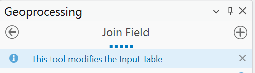
For “Transfer Method”, switch to
Use Field Mapping. This will load all of the fields into the window below. Next remove all of the fields exceptcentroid_x,centroid_yandADMIN. Finally, double click each and rename asfocal_x,focal_yandfocal_name, and press Run. Do not close the Geoprocessing pane, as we’ll be using the tool again shortly.
If successful, our spatial weights matrix should contain attribute and geometric information related to the focal feature for each row (as identified using NE_ID).
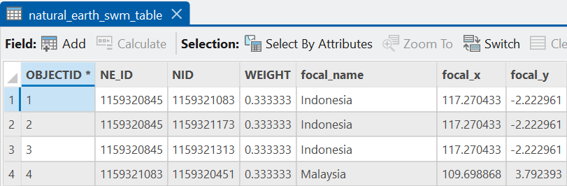
Our next step is to repeat this process, but this time targeting information related to the neighbouring feature for each row (as identified using NID).
Return to Join Field, where the previous inputs should still be present. To switch to the neighbouring feature, this should be as simple as updating the Input Field to
NID, and switching the transfer field names tonb_x,nb_yandnb_name15.
Our spatial weights matrix now contains geographic information for both the focal and neighbouring features, so let’s visualise the connections between them as Lines connecting the feature centroids:
Open the Geoprocessing tool XY To Line, using
focal_xandfocal_yas the “Start X and Y Fields”, andnb_xandnb_yas the “End X and Y Fields”. Save the output to our project directory, using a suitable name (e.g.,natural_earth_swm_lines), and make sure to “preserve attributes”.
Here is our output, visualising all the neighbourhood connections in \(\mathbf{W}\), using contiguity weights.
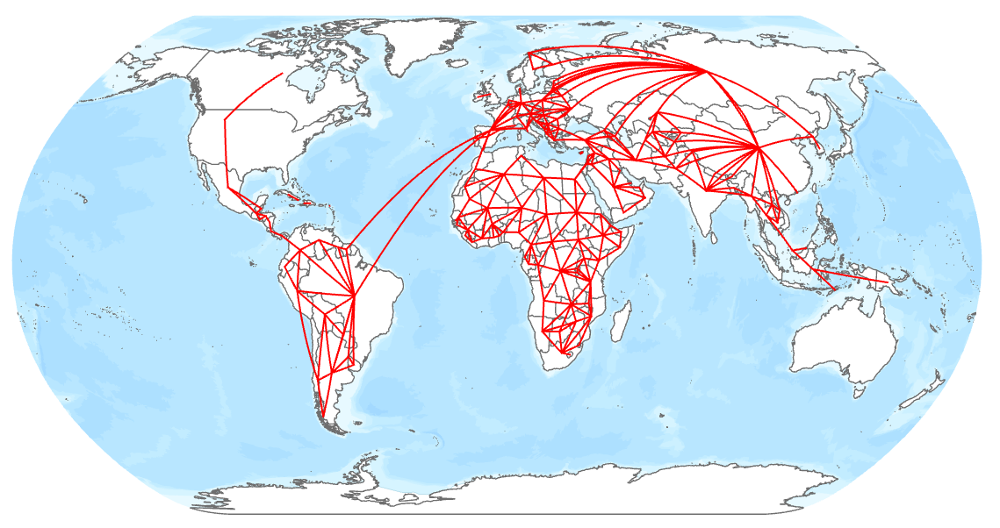
Which parts of the world have many / few connections?
What are the limitations of using feature centroids to represent our topological connections?
2.2.7 Cultural Distance
By now you should understand the structure of \(\mathbf{W}\), how to calculate \(w\), and can investigate and visualise the spatial connections in a dataset. In most cases, this is where a spatial analyst would move on to further analysis, using the spatial weights matrix as an input.
However, spatial weights can be useful in their own right, particularly when the spatial structure of a dataset can be linked to other spatial attributes. To demonstrate this, we are going to finish the practical by comparing \(\mathbf{W}\) to the Cultural Fixation Index (CFST) produced by Muthukrishna et al. (2020). This dataset includes an estimate of cultural distance for 80 country pairs, which prompts the following line of enquiry:
Are “neighbouring” countries, as defined by our spatial weights matrix, more culturally similar?
Add
cultural-distance.csvto ArcGIS and inspect.
This table contains unique combinations of countries, as summarised in join_key, and the corresponding cultural distances (distance). Our next task is to join this information to our spatial weights matrix created above.
The smaller the cultural distance value, the more similar the countries are e.g., Egypt and Norway are dissimiliar (0.5953), whereas Australia and the UK are highly similar (0.0319).
2.2.7.1 Data wrangling
As discussed above, this standalone table (.csv) is not easily editable, so:
Export Table, saving to our project File Geodatabase (
practical-2.gdb), with a suitable name. When complete, remove the original standalone tablecultural-distance.csvfrom ArcGIS to avoid confusion.
Next we are going to remove identical geometries from the XY to Line layer created above. This is because the spatial weights matrix is often isomorphic16, especially when using contiguity weights i.e., if \(A\) is a neighbour of \(B\), then \(B\) is a neighbour of \(A\). This explains why we often see symmetry in \(\mathbf{W}\):
\[\mathbf{W}=\begin{bmatrix} 0 & 1 & 0 & 1 & 0 & 0 \\ 1 & 0 & 1 & 1 & 0 & 0 \\ 0 & 1 & 0 & 1 & 0 & 0 \\ 1 & 1 & 1 & 0 & 1 & 1 \\ 0 & 0 & 0 & 1 & 0 & 1 \\ 0 & 0 & 0 & 1 & 1 & 0\end{bmatrix}\]
In our case, every neighbour relationship is represented twice in natural_earth_swm_lines e.g., there is a feature representing the relationship between the United Kingdom and the Republic of Ireland, and another feature representing the relationship between the Republic of Ireland and the United Kingdom. We can be justified in removing one of these as follows:
Open Delete Identical with
natural_earth_swm_linesas the input. For “Fields” selectShapei.e., we want to remove rows which have identical geometries. This modifies the input layer, so press Run.
To link this dataset to our table of cultural distance, we are going to use a table join, linking to the join_key in the latter (e.g., Algeria-Andorra). To achieve this, we need to create a comparable field in our XY to Line dataset:
Open the Attribute Table for
natural_earth_swm_lines, right click on the table → Calculate Field. For “Field Name”, usetarget_keywith “Field Type” =Text. The “Expression” input allows us to combine our existing Fields using Python, or we can create more complex functions in the “Code Block”. Paste the following equation into the “Expression” input:"-".join(sorted([!focal_name!, !nb_name!]))and Apply.
This should create a new field in the Attribute Table, where the output is the two country names ([!focal_name!, !nb_name!]), sorted() alphabetically, and then joined together using join(), with the country names separated by -.
We can join this information to our spatial weights matrix as follows:
Use Join Field with
cultural_distanceas the Input Table (the editable version stored in your project.gdb) andnatural_earth_swm_linesas the Join Table, joining based on thejoin_keyin the former andtarget_keyfrom the latter. For “Transfer Fields”, we only want to transfer thetarget_key.
When complete, rows with a match between join_key and target_key will have data, and those without a match will contain <Null>:
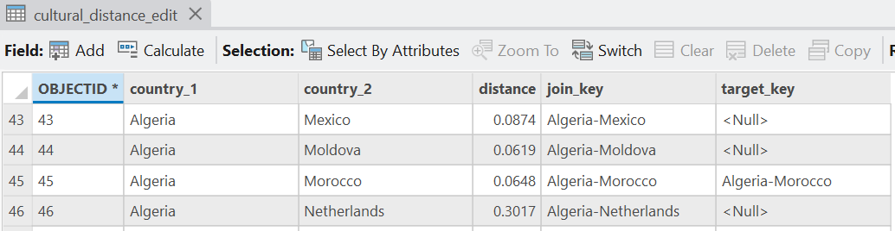
We can utilise this pattern to create a new field, summarising whether rows are neighbouring or non-neighbouring.
Open the Attribute Table for
cultural_distanceand Create Field (“Name” =neighbours, “Field Type” =Text) using the following Expression:"false" if !target_key! is None else "true"and Apply:
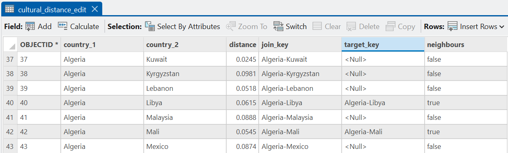
This approach populates the neighbours field with true for country pairs which are neighbouring (as defined by our spatial weights matrix) AND which have a cultural distance value from Muthukrishna et al. (2020). Rows where the value is false denotes country pairs which are not neighbouring OR do not have a cultural distance value. For example, the United Kingdom and the Republic of Ireland are classed as neighbouring in \(\mathbf{W}\), but there is no cultural distance value, hence false.
2.2.7.2 Interpretation
We now have all the data we need to answer our initial question:
Are “neighbouring” countries, as defined by our spatial weights matrix, more culturally similar?
Open the Geoprocessing tool Summary Statistics, using
cultural_distanceas the input and choosing a suitable output name. For “Statistics Fields”, usedistanceas the “Field”, and selectMeanandStandard deviationfor “Statistic Type”. For “Case Fields”, useNeighbours
When complete:
Inspect the output, which should contain the mean and standard deviation of the cultural distance values for each group (neighbours, non-neighbours).
What is your intepretation of the results? Are neighbouring countries more culturally similar?
What are the limitations of this approach?
Answer
Our results indicate that non-neighbouring countries are characterised by (on average) greater (\(\times 2\)) cultural distance (0.14) compared to neighbouring countries (0.07). However, we can be critical here:
- Note the extreme un-evenness of sample sizes.
- The estimates overlap when considering the standard deviation. Could we use a statistical test for significance?
- The results are sensitive to our designation of \(\mathbf{W}\).
- The results are sensitive to the calculation of cultural distance. Can this be expressed well by a single value?
Congratulations! You have completed the practical and should now be familiar with the conceptual and mathematical background to spatial weights. We have also demonstrated an application of spatial weights, and will explore this further in next weeks practical.
2.3 Extra
In the practical we’ve worked exclusively with Polygons. How would we define neighbours for a Point dataset?
Open the
world_cities_5mlayer created in Practical 1 and use the Neighbourhood Explorer to investigate different conceptualisations of spatial relationships. Inverse distance, fixed distances and \(K\) nearest neighbours are common approaches.
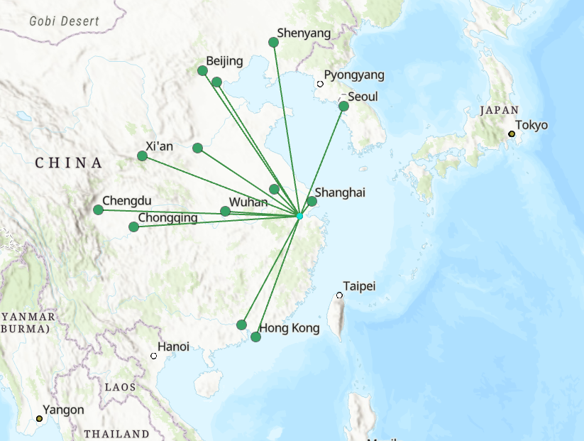
Another approach is to use “Trimmed Delaunay Triangulation”, which can be run much like the other conceptualisations. To really understand how this works:
Open the Geoprocessing tool Create Thiessen Polygons and run with the
world_citieslayer as input, and preserve all “Output Fields”.
This tool creates Thiessen or Voronoi Polygons around a set of Points, where the area within each Polygon is closer to the focal point than any other point in the dataset, as shown here:
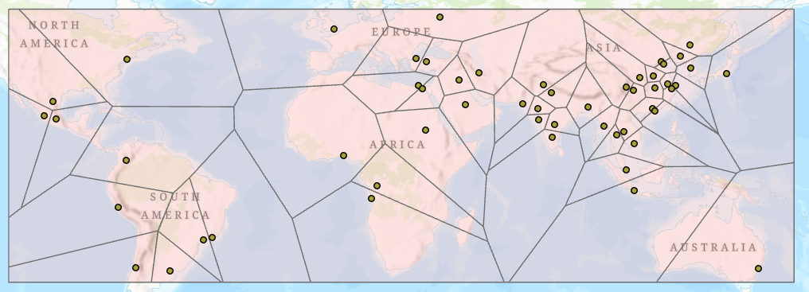
Return to the Neighbourhood Explorer but use the output of Create Thiessen Polygons as the input, and using
Contiguity Edges Cornersas the conceptualisation.
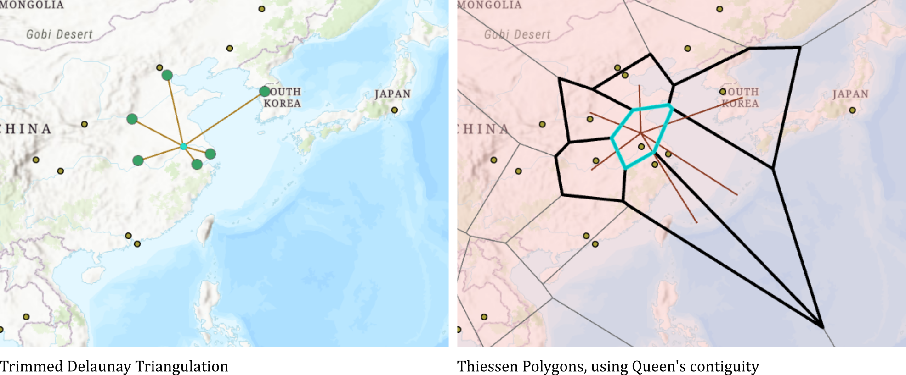
While Trimmed Delaunay Triangulation and Thiessen Polygons are not identical approaches (the former creates a mesh of non-overlapping triangles connecting the Points), they are conceptually similiar: both methods convert our Point data to areal data before contiguity weights are applied. A Thiessen approach is one I’ve used in my own research, see Tomkins et al. (2021).
Remember - we can define neighbours for all types of spatial data (e.g., Points, Lines, Polygons), so keep this in mind for later tasks in the unit.
2.4 Resources
- Tobler, W. (1970). A Computer Movie Simulating Urban Growth in the Detroit Region. Economic Geography 46, 234–40.
- Miller, H.J. (2004). Tobler’s first law and spatial analysis. Annals of the association of American geographers, 94(2), pp.284-289.
- Tobler, W. (2004). On the first law of geography: A reply. Annals of the association of American geographers, 94(2), pp.304-310.
- Anselin, L. and Li, X. (2020). Tobler’s law in a multivariate world. Geographical Analysis, 52(4), pp.494-510.